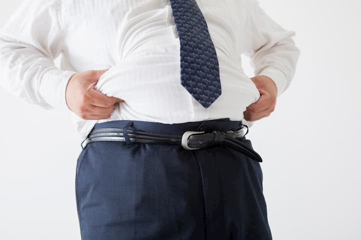
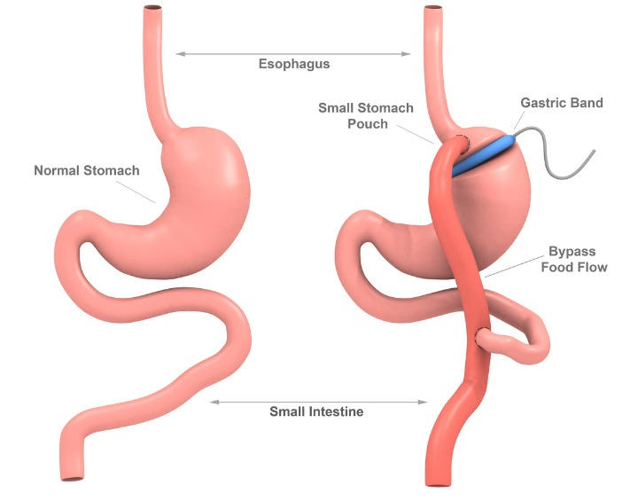

عملية تحويل مسار المعدة في تركيا
تعدّ عملية تحويل مسار المعدة من أنواع عمليات السمنة، وتهدف لإنقاص وزن المريض الذي يعاني من سمنة مفرطة بطريقة جراحية
دعنا نتصل بك

جراحة الكتف
يمتاز مفصل الكتف بأنّه أكثر مفاصل الجسم حريّةً، وأوسعها مجالاً في الحركة، ولكن تلك الحريّة تجعله أكث...
عملية الفيمتو سمايل
تعتبر تقنية سمايل التقنية الأحدث في عمليات تصحيح الأخطاء البصرية الانكسارية بالليزر وتتضمّن عمل شقٍّ...
تركيب القشور الخزفية في تركيا
علاج الأسنان في تركيا يستند إلى أحدث التقنيات في طب وجراحة الأسنان، مثل القشور الخزفية بأنواعها، وذل...
عمليات الفيمتو ليزك
تستخدم عملية الفيمتوليزك لتصحيح مشاكل النظر من طول وقصر بكافّة درجاته من بسيط ومتوسّط وشديد، سواء أك...
لا بدّ أنّك سمعت يوماً عن عملية تحويل مسار المعدة كإجراء لإنقاص الوزن الزائد؛ حيث يعتبر تحويل مسار المعدة بالتنظير (LRYGB)أحد أهمّ أنواع جراحات فقدان الوزن وعمليات السمنة الجراحية في تركيا.
جدول المحتويات
ماهو تحويل مسار المعدة ؟
أجريت أول عملية لتحويل مسار المعدة في العام 1994، وتتطور طريقة إجراء هذا النوع من العمليّات باستمرار مع مرور الوقت، وتقدم التقنيات الحديثة، ليصبح أكثر أماناً وفاعلية.
وتُعدُّ عمليّة تحويل مسار المعدة خياراً ذهبيّاً بالنسبة لباقي عمليّات إنقاص الوزن، حيث ينتج عنها فقدان وزن أكثر من عملية ربط المعدة، وتفوق نتائجه أيضاً عملية تكميم المعدة.
ويتميّز هذا النوع من العمليات بأنّ الوزن المفقود الناتج عن تحويل مسار المعدة يبقى ثابتاً على المدى الطويل.
انواع عملية تحويل مسار المعدة
هناك عدة أنواع لإجراء تحويل مسار المعدة، وكلها تتجاوز الأمعاء الدقيقة، وبعضها بتقليل حجم المعدة.
- تحويل مسار المعدة التقليدي، وينقسم إلى تحويل مسار المعدة القريب أو البعيد.
- تحويل مسار المعدة المصغر.
- تحويل المسار ثنائي التقسيم (SASI).
نساعدك في علاجك الطبية على تحديد نوع الجراحة الأفضل لك؛ وَفق حالتك، وتاريخك الطبي، وأهداف إنقاص الوزن.
تحويل مسار المعدة المصغر
تتلخص عملية تحويل مسار المعدة المصغر بعزل الجزء العلوي من المعدة وتحويله إلى أنبوب، ثم ربطه بحلقة من الأمعاء.
وقد أصبحت هذه التقنية من أكثر التقنيات رواجاً، وأهم ما يميزها، أنها قابلة للرجوع إلى الحالة الأصلية، إضافة إلى نتائجها المشجعة.
تحويل مسار المعدة ثنائي التقسيم
عملية تحويل مسار المعدة ثنائي التقسيم أو ما تسمى طبياً بالساسي SASI هي واحدة من أحدث أنواع جراحات تحويل مسار المعدة، وسميت بهذا الاسم لأنه يتم من خلالها تقسيم مسار الطعام الداخل إلى المعدة إلى مسارين:
المسار الأول هو المسار المعتاد للطعام .
المسار الثاني للطعام فيكون من المعدة إلى نهاية الأمعاء الدقيقة مباشرة متخطياً بذلك جزءاً كبيراً من مساحة الأمعاء.
تتضمن عملية تحويل مسار ثنائي التقسيم بالمنظار (عملية الساسي) القيام بإجراءين متزامنين، هما عملية تكميم المعدة وعملية تحويل مسار المعدة، حيث تقسم العملية إلى مرحلتين:
- المرحلة الأولى: وتسمى (عملية تكميم المعدة) يتم فيها قص حوالي 80% من حجم المعدة، بحيث تتضمن باطن المعدة.
- المرحلة الثانية: وتسمى (تحويل مسار المعدة) تتم بالتزامن مع المرحلة الأولى، ويتم فيها إنشاء وصلة أو مسار بين المعدة والأمعاء الدقيقة، ونتيجة لذلك يتم تحديد وتقليل كمية الطعام وكذلك تقليل كمية الطعام الممتص من الجسم.
تحويل مسار المعدة بعد التكميم
إذا فشلت جراحة تكميم المعدة في تحقيق فقدان الوزن المطلوب للمريض، فإن إجراء تحويل مسار المعدة يمكن أن يكون بديلاً فعالاً لفقدان الوزن الإضافي.
مميزات تحويل مسار المعدة
صحيح أنّ عمليّات إنقاص الوزن كلّها تؤدّي إلى فقدان الوزن بدرجة أو بأخرى، ولكن يبقى هناك بعض العوامل التشريحيّة أو الفيزيولوجيّة التي تُشجع أو تمنع إجراء عملية تحويل مسار المعدة.
من أمثلة ذلك:
- تُحَسِّنُ عمليّة تحويل مسار المعدة استجابة الأنسجة للأنسولين بدرجة أكبر من العمليات الأخرى، فقد يكون هذا سبباً لترجيحها على غيرها من العمليات، خصوصاً لمرضى السُّكري من النوع الثاني، ومرضى الكبد الدهني، والمصابين بالمتلازمة الاستقلابية، وأيضاً تكيُّسات المبايض، حيث إن المشترَك بين تلك الأمراض وجود مقاومة للأنسولين في الأنسجة.
- من الجدير بالذكر هنا أن عملية تكميم المعدة وعملية تحويل مسار المعدة تقومان بتحسين أعراض مرض السكري من النوع الثاني بنفس القدر على المدى القريب، ولكن تعدُّ عملية تحويل مسار المعدة أكثر نجاعة على المدى البعيد.
- وفي حالة المرضى الذين يعانون من ارتجاع مزمن في المريء، لاسيّما في حال وجود مضاعفات، تُعَدُّ عملية تحويل مسار المعدة هي الإجراء الأكثر ملائمة لهم من عملية تكميم المعدة.
- وعلى العكس، فإنّ المرضى الذين يتعاطون المسكّنات غير المخدّرة أو مادة الكورتيزون على المدى البعيد، بسبب أمراض معيّنة، أو آلام مزمنة، وأيضاً المرضى المصابين بالتهاب الأمعاء المزمن، فلا تُعَدُّ عملية تحويل مسار المعدة الخيار الأنسب لهم، بل يُعَدُّ تكميم المعدة خيارهم الملائم والأكثر فائدة.
الاعراض الجانبية لعملية تحويل مسار المعدة
يمكن أن تكون عمليات تحويل مسار المعدة ناجحة تمام النجاح في إنقاص الوزن عند المرضى الذين يعانون من السمنة، لكنّ كلَّ جراحة تنطوي على بعض الأعراض الجانبية، وفيما يلي أهمها:
- متلازمة الإغراق.
- الفتق.
- نزيف داخلي أو نزيف من الشق الجراحي.
- التسرب.
- انثقاب المعدة أو الأمعاء.
- انسداد الأمعاء.
- سوء تغذية عام أو بالبروتين، أو كلاهما معاً.
- مشاكل الرئة أو القلب، أو كلاهما معاً.
- إصابة الطحال أو أي عضو آخر.
- تقرح المعدة أو الأمعاء.
- نقص فيتامين الحديد.
مخاطر و اضرار تحويل مسار المعدة
- عزل المعدة، وإعادة توجيه الأمعاء؛ إذ إن تجاوز جزء من الجهاز الهضمي يؤدي إلى نقص التغذية.
- تغيير كامل في نمط الحياة.
- تحديد أنواع الطعام التي يُسمَح بتناولها والتي يجب تجنبها.
- صعوبة العودة إلى ما كنت عليه قبل العملية.
شروط عملية تحويل مسار المعدة ؟
يتمّ اللجوء لعمليّة تحويل مجرى المعدة في حالات البدانة المفرطة، بعد إجراء تقييم لكتلة الجسم، وفق ما يلي:
- ارتفاع مؤشر كتلة الجسم إلى أكثر من 40 كيلو غرام لكل متر مربّع، سواء بوجود مضاعفات للسُّمنة أو عدمها.
- ارتفاع مؤشر كتلة الجسم ما بين 35-40 كيلو غرام لكل متر مربّع، ووجود إحدى مضاعفات السُّمنة الخطيرة، مثل السكري، واضطرابات النوم، والشخير، وارتفاع ضغط الدم، وأمراض الشرايين التاجية وغيرها.
- ارتفاع مؤشر كتلة الجسم بين 30-35 كيلو غرام لكل متر مربّع، ووجود صعوبة في السيطرة على مستويات السكر أو وجود المتلازمة الاستقلابيّة.
يتمّ تقييم الأشخاص الذين يجري ترشيحهم بناء على أحد المعايير السابقة، اعتماداً على تقييم شامل متعدّد التخصّصات، يُجريه عادةً أخصائي جراحة بدانة، وأخصائي تغذية، ومستشار نفسي.
خطوات و مراحل عملية تحويل مسار المعدة في تركيا
تعتمد عمليّة تحويل مسار المعدة على مبدأ تقييد كميَّة الطعام التي يتناولها الشخص، وتقليل إجماليّ كميَّة الطعام التي تمتصها القناة الهضميّة.
بالإضافة إلى ذلك تعمل عملية تحويل مسار المعدة، على تحفيز عمليات هرمونيّة وفيزيولوجية عندما يحدث عزل واستثناء للاثني عشر، حيث تقلُّ مستويات هرمون الغريلين ghrelin، وهو هرمون الجوع، وتزيد مستويات هرمون ليبتين leptin، وهو هرمون الشبع، مما يقلّل من الشعور بالجوع، ويساعد في تقييد كميّة الطعام التي يتناولها مريض السمنة المفرطة.

- يتمّ إجراء عملية تحويل مجرى المعدة تحت التخدير الكامل، حيث يتمّ فتح بعض الفتحات الصغيرة، بطول 3 سم للواحدة منها، ويتمّ إدخال الأدوات الجراحيّة من خلالها مع كاميرا مزوّدة بإضاءة قوية لتحسين الرؤية، ويقوم الجرّاح بمتابعة العملية من خلال شاشة إلكترونية، ويتم ّنفخ تجويف بالبطن بغاز ثاني أكسيد الكربون الخامل؛ لتوسيع مجال الحركة داخل البطن.
- يقوم الجرّاح بدايةً بعمل قطع عرضي في المعدة وعزله عن باقي المعدة، ليبقى جزء منها على شكل مستودع صغير بحجم 30 مل تقريباً، بحيث لا يستطيع استيعاب سوى كميّة صغيرة جداً من الطعام.
- ويقوم الجراح أيضاً بعمل قطع عرضي في الأمعاء الدقيقة، ووَصْل الطرف الحرِّ منها مباشرة بالمستودع الصغير الباقي من المعدة، ليمرَّ الطعامُ من خلال الجزء الصغير الباقي من المعدة، ومنه مباشرة إلى وسط الأمعاء، متجاوزاً بذلك الجزء الأول من الأمعاء ومعظم أجزاء المعدة.
كم تستغرق عملية تحويل مسار المعدة
تستغرق عملية تحويل مسار المعدة عادة بين ساعتين وثلاث ساعات.
كيف يتم تحويل مسار المعدة بالمنظار ؟
تتضمن عملية تحويل مسار المعدة بالمنظار، إجراء خمسة إلى ستة شقوق صغيرة في البطن يتم من خلالها إدخال منظار صغير متصل بكاميرا فيديو وأدوات جراحية.
يقوم الجراح بتدبيس الجزء العلوي من المعدة بحيث يتم فصله عن الجزء السفلي لإنشاء كيس صغير للمعدة.
يتم بعد ذلك توصيل جزء من الأمعاء الدقيقة - يسمى الصائم - بجيب المعدة الصغيرة للسماح للطعام بتجاوز الجزء السفلي من المعدة، الاثني عشر؛ إذ يقلل هذا الالتفاف من كمية السعرات الحرارية والمواد الغذائية التي يمتصها الجسم.
ما بعد عملية تحويل مسار المعدة
معظم عمليات تحويل مسار المعدة تكون بالمنظار، ما يعني أن الجراح يقوم بعمل جروح صغيرة.
وهذا يجعل وقت التعافي أقصر، يقيم معظم الناس في المستشفى لمدة يومين او ثلاثة، ويعودون إلى ممارسة الانشطة التي اعتادو عليها في غضون 3 إلى 5 أسابيع.
لن يُسمح بشكل عام بتناول الطعام لمدة يوم أو يومين حتى تتمكن المعدة والجهاز الهضمي من الشفاء ثم ستتبع نظاماً غذائياً محدداً لبضعة أسابيع، نتحدث عنه لاحقاً في هذا المقال.
بعد عملية تحويل مسار المعدة يتم متابعتك من قبل الأطباء في عيادات علاجك حيث :
- تُتابع حالة المريض عن قُرب، وتتمّ معالجة أيّ ألم أو غثيان إن وُجِد.
- يوصف للمريض بعد العملية مجموعة من الفيتامينات والمعادن والمكمّلات الغذائية.
- قد يعاني المريض في الفترة الأولى بعد العملية من بعض الأعراض الجانبية نتيجة لهبوط وزنه السريع، مثل: آلام في الجسم، أو شعور بالتعب، أو جفاف في الجلد، وغيرها من الأعراض الأخرى.
نظام الاكل بعد عملية تحويل مسار المعدة
تقلل جراحة تحويل المعدة من حجم المعدة وتغير طريقة دخول الطعام إلى الأمعاء بعد الجراحة، من المهم الحصول على التغذية الكافية مع الحفاظ على فقدان الوزن من المرجح أن يوصي طبيبك بما يلي:
- تناول الطعام والشراب ببطء، خذ 30 دقيقة على الأقل لتناول وجباتك و30 إلى 60 دقيقة لشرب كوب واحد من السائل، انتظر 30 دقيقة قبل أو بعد كل وجبة لشرب السوائل.
- حافظ على الوجبات الصغيرة: تناول عدة وجبات صغيرة يوميًا، يمكنك البدء بست وجبات صغيرة يوميًا، ثم الانتقال إلى أربع وجبات طعام، وأخيرًا، عند اتباع نظام غذائي منتظم، ثلاث وجبات يوميًا. يجب أن تتضمن كل وجبة حوالي نصف كوب إلى كوب من الطعام.
- شرب السوائل بين الوجبات: لتجنب الجفاف، ستحتاج إلى شرب ما لا يقل عن 8 أكواب (1.9 لتر) من السوائل يومياً، لكن شرب الكثير من السوائل وقت تناول الطعام يمكن أن يجعلك تشعر بالشبع المفرط ويمنعك من تناول ما يكفي من الطعام الغني بالمغذيات.
- امضغ الطعام جيدًا: الفتحة الجديدة التي تؤدي من معدتك إلى الأمعاء الدقيقة ضيقة للغاية ويمكن أن تسدها قطع أكبر من الطعام، تمنع الانسدادات الطعام من مغادرة معدتك ويمكن أن تسبب القيء والغثيان وآلام البطن، خذ قضمات صغيرة من الطعام وامضغها إلى قوام مهروس قبل البلع.
- ركز على الأطعمة الغنية بالبروتين: تناول هذه الأطعمة قبل تناول الأطعمة الأخرى في وجبتك.
- تجنب الأطعمة التي تحتوي على نسبة عالية من الدهون والسكر: تنتقل هذه الأطعمة بسرعة عبر جهازك الهضمي وتسبب متلازمة الإغراق.
- تناول مكملات الفيتامينات والمعادن الموصى بها: بعد الجراحة، لن يتمكن جسمك من امتصاص ما يكفي من العناصر الغذائية من طعامك، ستحتاج على الأرجح إلى تناول مكمل متعدد الفيتامينات كل يوم.


الفيتامينات بعد عملية تحويل مسار المعدة
يجب تناول الفيتامينات والمكملات الغذائية يومياً لمنع سوء التغذية.
يوصي الأطباء بأن يأخذ مرضى عملية تحويل مسار المعدة الفيتامينات والكالسيوم مع فيتامين د والحديد وفيتامين ج وفيتامين د وفيتامين ب 12.
نتائج عملية تحويل مسار المعدة
تساعد عمليّة تحويل مجرى المعدة على فقدان دائم وكبير في الوزن، حيث تصل نسبة الوزن المفقود إلى حوالي 60% من الوزن الزائد خلال عامين، وربّما تصل إلى أكثر من ذلك، فضلاً عن مساعدتها في تحسين جودة حياتك وقدرتك على القيام بالكثير من الأنشطة، وبالإضافة إلى ذلك قد تُعالج أو تَقِي من عدة أمراض مثل:
- ارتجاع الحمض للمريء.
- أمراض القلب.
- ارتفاع ضغط الدم.
- ارتفاع الكوليسترول.
- اضطرابات النوم والشخير.
- السكر من النوع الثاني.
- حدوث الجلطات الدماغية.
- العقم.
نتائج عمليات المعدة قبل وبعد في تركيا
 قبل
قبل
 بعد
بعد
 قبل
قبل
 بعد
بعد
 قبل
قبل
 بعد
بعد
 قبل
قبل
 بعد
بعد
نسبة نجاح عملية تحويل مسار المعدة في تركيا
قد يفقد المرضى ثلاثين إلى خمسين بالمئة من وزنهم الزائد في الأشهر الستة الأولى، وسبعاً وسبعين بالمائة من الوزن الزائد بعد اثني عشر شهرًا من الجراحة.
كما أظهرت دراسات أخرى أن المرضى لا يكتسبون الوزن الذي خسروه بنسبة خمسين إلى ستين بالمئة من الوزن الزائد بعد 10 إلى 14 عامًا من الجراحة.
عملية تحويل مسار المعدة لمرضى السكر
يهدف الأطباء بهذه العملية لمساعدة الأمعاء الدقيقة على التخلص من الجلوكوز الزائد لمرضى السكري.
غالباً ما تحسن جراحة تحويل المعدة من أعراض مرض السكري من النوع الثاني، حتى قبل أن يبدأ نقص الوزن.
قال الدكتور نيكولاس ستيلوبولوس، الباحث في قسم الغدد الصماء في مستشفى الأطفال في بوسطن وكلية الطب في بوسطن، "المبدأ الرئيسي هو أنه بعد تجاوز المعدة تصبح الأمعاء أهم الأنسجة لاستخدام الجلوكوز وهذا يقلل من مستويات السكر في الدم."
تكلفة عملية تحويل مسار المعدة في تركيا
ذاع صيت تركيا في السياحة العلاجية وخصوصاً فيما يخص عمليات تحويل مسار المعدة من حيث السعر المناسب والنتائج المرضية، يمكنكم التواصل معنا للحصول على تقييم لحالتكم واستشارة طبية دقيقة .
مراحل نزول الوزن بعد تحويل مسار المعدة
خلال الأشهر الثلاثة الأولى، يمكن للمرضى توقع خسارة وزن يصل في المتوسط إلى أربعة عشر كيلو.
وبعد ثلاثة أشهر، يمكن أن تصل النسبة المئوية للخسارة الإجمالية من الوزن الزائد إلى ثلاثين بالمائة.
ويرتفع هذا الرقم إلى خمسين بالمئة بعد ستة أشهر، مما يعني أن فقدان الوزن المتوقع يصل إلى نحو كيلو جرام واحد في الأسبوع.
الأسئلة الشائعة لتحويل مسار المعدة
نعم ، ولكن عملية تحويل مسار المعدة لها بعض المخاطر مثل أي عملية جراحية أخرى.
لا ، جراحة تحويل مسار المعدة غير قابلة للعكس.
تستغرق هذه العملية الجراحية مدة تتراوح بين 2-4 ساعات.
يتبع الطبيب الجراح الخطوات التالية: • تخدير عام. • قسم المعدة إلى قسمين • توصيل القسم العلوي المنشأ حديثاً بالأمعاء الدقيقة مباشرة
الفائدة الرئيسية في إنقاص الوزن, هي ايضا تساعد في علاج الحالات المرتبطة بالسمنة مثل : • سكر الدم النوع الثاني • ارتفاع ضغط الدم • مشاكل القلب
الأضرار الممكنة خلال عملية تحويل مسار المعدة هي نفس الأضرار الممكنة خلال اجراء اي عملية جراحية أخرى, إلى ان هناك بعض الأضرار على المدى البعيد تشمل : • انسداد الأمعاء • الفتق • سوء التغذية • ثقب المعدة • قرح المعدة • القيء
تم الإبلاغ بشكل متكرر عن التحكم في نسبة السكر في الدم وحتى علاج مرض السكري من النوع 2 باستخدام عملية تحويل مسار المعدة
أحد المضاعفات الرئيسية لعملية تحويل مسار المعدة هو زيادة خطر الإصابة بسرطان القولون والمستقيم.
ينصح الأطباء المرضى بعدم تناول الأسبرين أو المنتجات التي تحتوي على الأسبرين لمدة أسبوع على الأقل بعد الجراحة.
لوحظ ارتفاع في اختبارات وظائف الكبد (LFTs) في مريض بعد عملية تحويل مسار المعدة
لوحظ ارتفاع في اختبارات وظائف الكبد (LFTs) في مريض بعد عملية تحويل مسار المعدة
تم الإبلاغ عن معدلات تكرار أعلى بعد العلاج الجراحي القياسي لفتق الحجاب الحاجز في مرضى السمنة المفرطة ،
وهو من المضاعفات النادرة في 10٪ من الحالات.
لحسن الحظ ، التهاب المعدة ليس من المضاعفات الشائعة بعد تحويل مسار المعدة.
توجد دراسات محدودة حول تأثير المجازة المعدية على متلازمة تكيس المبايض.
"يحدث الفشل إما عندما: 1- يعاني المرضى من أعراض جانبية شديدة. 2- عندما يكونون غير قادرين على إنقاص الوزن ".
تكون العملية ضارة اذا : 1- مؤشر كتلة جسمك أقل من 35. 2- ليس لديك مشاكل صحية متعلقة بالسمنة. 3- يمكن أن يفقد الوزن عن طريق الحمية والتمارين الرياضية ".
لأنها من بين أفضل جراحات السمنة ، حيث يكون فقدان الوزن أسرع في عملية تحويل مسار المعدة.
تقليل مخاطر المشاكل الصحية المتعلقة بالسمنة التي تهدد الحياة ، إلى جانب تقليل الوزن الزائد.
لتقليل مخاطر المشاكل الصحية المتعلقة بالسمنة التي تهدد الحياة ، إلى جانب تقليل الوزن الزائد.
تعد جراحة تحويل مسار المعدة مناسبة للأشخاص الذين يعانون من السمنة المفرطة والذين يزيد مؤشر كتلة الجسم لديهم عن 35 ، وخاصة أولئك الذين يعانون من مشاكل صحية مرتبطة بالسمنة من جميع الأعمار حتى 60 عامًا.
تحدث متلازمة الإغراق عندما يتم إنتقال الطعام مباشرة من كيس المعدة إلى الأمعاء الدقيقة دون هضمه.
يشير هذا إنتقال الطعام مباشرة من كيس المعدة إلى الأمعاء الدقيقة دون هضمه.
اليوم أكثر من 90٪ من عمليات تحويل مسار المعدة التي يتم إجراؤها لفقدان الوزن تتم بالتنظير البطني.
تتراوح تكلفة جراحة تحويل مسار المعدة من 3100 إلى 3500 دولار أمريكي.
نظرًا لارتفاع المخاطر والمضاعفات ، لا يتم عادةً إعادة إجراء عملية تحويل مسار المعدة.
نعم ، إن تساقط الشعر بعد جراحة السمنة شائع جدًا.
هذه نتيجة غير مباشرة بسبب عدم التوازن الهرموني.
قد يتأثر نمو الجنين بسبب سوء التغذية الناجم عن بعض جراحات إنقاص الوزن ، بينما قد تساعد الجراحة قبل الحمل في التغلب على ارتفاع ضغط الدم وسكري الحمل.
"نعم إذا ، 1- جهودك لفقدان الوزن بالحمية والتمارين الرياضية باءت بالفشل. 2- أن يكون مؤشر كتلة الجسم (BMI) 40 أو أعلى ".
نعم ، يساعدك على إنقاص الوزن.
نعم ، بسبب سوء ممارسة الرياضة أو عادات النظام الغذائي.
هل لديك إستفسار : تواصل معنا - الإستشارة مجانية
علاجك الطبية .. لتكن الصحة تاجك.